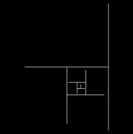
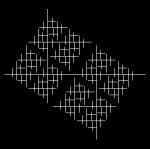
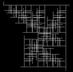
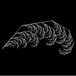

AA&AI
Opdracht 4
Menno Kooistra
student nummer: 9835385
Enkele L-Systeem-formules
Op zoek naar een eenvoudig schilderij van Mondriaan om na te maken met behulp van een L-systeem, stuitte ik op de pagina van Jano van Hemert (http://www.liacs.nl/~jvhemert/mondriaan/) uit Leiden. Jano experimenteert op een soortgelijke manier met het produceren van digitale Mondriaan schilderijen die gegenereerd worden door een code. Maar dit terzijde. Na een aantal van Mondriaan’s bekendste werken te hebben bekeken, heb ik besloten de meester te kopiëren.
Ik ben begonnen met een blik te werpen op de "Big-H"
als preset value, de axiom te veranderen in een simpele "f" en de
code f=|[g][-f]|. Begint op een Mondriaan te lijken. Het "groeit"
alleen nog niet (figuur 1).
Na een tijdje proberen kwam ik op de volgende formule: f=[g][-f]+|[f]| (met nog steeds de Big-H en axiom op "f"). Deze "Mondriaan" groeit al (figuur 2).
De volgende Monriaan heeft een andere axiom, namelijk f[f], en de formule is: f=[g][f]+|[f]. Het levert weer een groeiend schilderij op die niet eens zo lelijk is (figuur 3). Een kleine verandering in de angle (van 90 naar 40) en het wordt een tak met bladeren (figuur 4).
|
 figuur 1 |
figuur 2 |
 figuur 3 |
 figuur 4 |
Tot zover mijn voorzichtige probeersels met de L-systemen.
Ik en erg onder de indruk van dit stukje Java, waarmee je naast het genereren van deze groeipatronen, ook nog eens een lust voor het oog verkrijgt. Het zijn mooie "screensavers" als het ware. Daar deed het me in eerste instantie erg aan denken.
Ik ben er van overtuigd dat als je lang genoeg rekent, probeert en programmeert, je exacte kopies van (niet al te gecompliceerde) schilderijen kunt kopiëren. De vraag is echter wat je eraan hebt. Kirsch en Kirsch gaven in het artikel "Storing Art Images in Intelligent Computers" al een paar antwoorden. Voor het opslaan van schilderijen (niet de zware en veel MB’s tellende images), het snel opzoeken van een bepaald image in een verzameling van duizenden anderen en het exposeren van een serie schilderijen (dia-show).
Het genereren van grammatica voor kunst is een hele grote stap. De Lindenmayer manier kan een grote hulp zijn voor het schrijven daarvan. Je zou stap voor stap na kunnen gaan hoe de kunstenaar in kwestie te werk is gegaan bij het maken van een schilderij. Je zou een L-systeem zo kunnen programmeren dat het een groeiende visualisatie laat zien van een schilderij. Dus de computer die het schilderij maakt.
Waar ik wel een antwoord op zou willen horen is de vraag waarom je een grammatica taal zou willen schrijven voor kunststijlen.
-